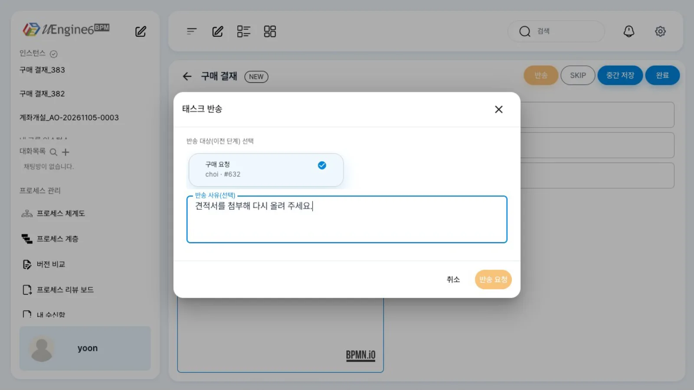
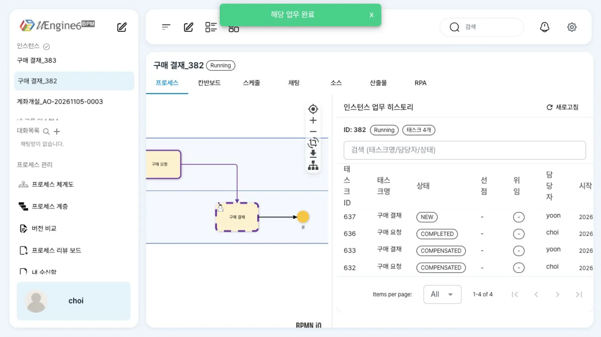
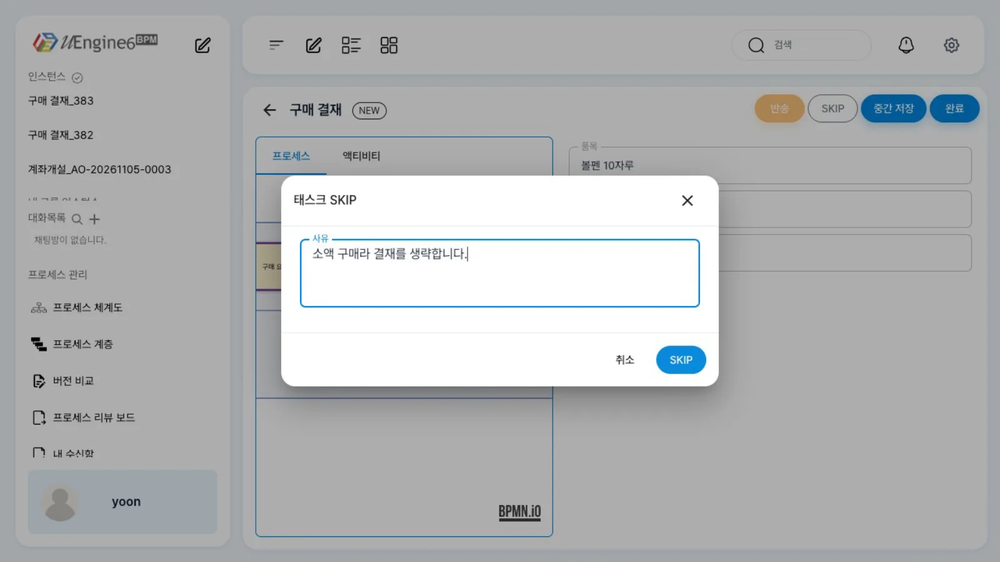
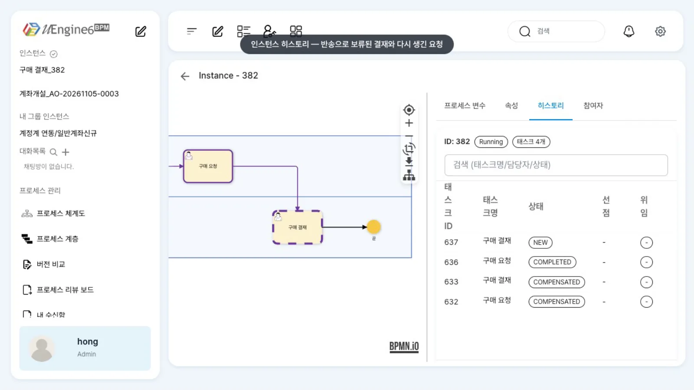

반송은 현재 작업을 되돌리고 앞 단계의 담당자에게 그 단계를 새 작업으로 다시 만듭니다. SKIP은 현재 작업을 건너뛰고 다음 단계로 진행합니다. 둘 다 작업 화면의 버튼으로 처리하며 사유를 남깁니다.
무엇을 · 왜#
결재에는 「보완해서 다시 올려 주세요」와 「이 건은 결재 없이 넘어갑니다」가 늘 있습니다. BPMN으로 그리면 되돌림 흐름과 조건 분기가 작업마다 붙습니다. uEngine6는 이 두 기능을 실행 중 조작으로 제공합니다. 정의에 화살표를 더 그리지 않고 처리할 수 있습니다.
| 반송 | SKIP | |
|---|---|---|
| 지금 작업 | 되돌려짐(COMPENSATED) |
SKIPPED(건너뜀), 끝난 것으로 봄 |
| 다음 일 | 고른 앞 단계를 그 단계의 담당자에게 새 작업으로 다시 만듦(되돌리기, backToHere) | 흐름이 다음 단계로 진행 |
| 사유 | 선택(「반송 사유(선택)」) | 필수 |
| API | POST /work-item/{taskId}/return |
POST /work-item/{taskId}/skip |
| 가능 여부 확인 | GET /work-item/{taskId}/return/availability (반송 대상 후보 포함) |
GET /work-item/{taskId}/skip/availability |
반송은 관리자 화면의 「이 위치로 되돌리기」(되돌리기와 실패한 작업 다루기)와 같은 엔진 동작을, 작업 담당자가 자기 화면에서 하는 것입니다.
위임(다른 사람에게 넘기기)은 이 브랜치의 작업 화면에 버튼이 보이지 않아 REST API(POST /work-item/{taskId}/delegate)로 합니다.
이 장의 예제
프로세스 튜토리얼/반송/구매결재 — 최구매 「구매 요청」 → 윤팀장(사용자 직접 지정 yoon) 「구매 결재」. 녹화 전에 최구매가 노트북 3대(2,400,000원)와 볼펜 10자루(15,000원)를 요청해 두었습니다.
따라 하기#
- 작업 열기. 윤팀장(
yoon)의 업무 목록에서 노트북 건 「구매 결재」를 엽니다. 품목·금액은 in 매핑으로 채워져 있습니다. - 반송. 「반송」을 누르면 「태스크 반송」 창의 「반송 대상(이전 단계) 선택」에 앞 단계 「구매 요청」(
choi · #<작업 번호>)이 선택되어 있습니다. 「반송 사유(선택)」에견적서를 첨부해 다시 올려 주세요.를 적고 「반송 요청」을 누릅니다.
태스크 반송 - 결과. 결재 작업과 앞의 「구매 요청」은 되돌려진 상태(
COMPENSATED)가 되고, 같은 인스턴스에 최구매가 담당하는 「구매 요청」이 새로 생깁니다. 화면은 인스턴스 화면으로 넘어갑니다. - 다시 제출. 최구매(
choi)의 업무 목록에 「구매 요청」이 다시 표시됩니다. 열어서 품목을노트북 3대 (견적서 첨부: Q-2611-07)로 고치고 금액을 넣어 「완료」를 누르면, 윤팀장에게 「구매 결재」가 새로 배정됩니다(인스턴스 히스토리: 새 결재NEW, 다시 제출한 요청COMPLETED, 앞의 둘COMPENSATED).
다시 온 구매 요청 - SKIP. 윤팀장이 볼펜 건 「구매 결재」를 열고 「SKIP」을 누릅니다. 「태스크 SKIP」 창에 사유
소액 구매라 결재를 생략합니다.를 적고 「SKIP」을 누르면, 「태스크를 건너뛰었습니다.」가 뜹니다. 작업은SKIPPED로 끝나며 인스턴스가 다음 단계(여기서는 끝, 「Completed」)로 진행합니다.
태스크 SKIP - 기록 보기. 관리자 화면
/admin/<인스턴스 번호>의 「히스토리」 탭에 되돌려진 요청·결재, 다시 생긴 요청, 다시 올라간 결재가 차례로 남습니다.
인스턴스 히스토리
찍은 뒤 꼭: 사유 LOB 정리
이 브랜치는 반송·SKIP 사유를 PostgreSQL 대용량 객체(bpm_worklist.reason, oid)로 저장합니다. 사유가 저장된 행이 조회되는 사람의 업무 목록(findToDo)은
500 "Unable to access lob stream"이 되고, 화면에는 오류 없이 빈 목록만 보입니다. 반송 사유는 앞 단계 담당자(최구매)의 원래 작업 행(COMPENSATED, 완료 상태가 아니어서 최구매의 할 일 조회에 포함됩니다)에, SKIP 사유는 건너뛴 작업 행에 남습니다. 반송 요청이 끝나기 전에 비우면 그 뒤에 사유가 기록되므로, 새 작업이 생긴 것을 본 뒤에 비우세요.
이 장을 녹화할 때는 반송·SKIP 직후 시연 데이터의 사유를 바로 비웠습니다. 시험 환경에서는 아래처럼 비울 수 있습니다(운영 데이터에 하지 마세요).
sql
-- 튜토리얼/반송/ 인스턴스의 사유만
SELECT lo_unlink(w.reason) FROM bpm_worklist w JOIN bpm_procinst p ON p.inst_id = w.inst_id
WHERE p.def_id LIKE '튜토리얼/반송/%' AND w.reason IS NOT NULL;
UPDATE bpm_worklist w SET reason = NULL FROM bpm_procinst p
WHERE p.inst_id = w.inst_id AND p.def_id LIKE '튜토리얼/반송/%' AND w.reason IS NOT NULL;
설정 레퍼런스#
정의에는 반송·SKIP을 위한 설정이 따로 없습니다. 사람 작업이면 어느 작업에서든 사용할 수 있습니다.
API#
# 반송할 수 있는지와 대상 후보
curl http://localhost:9294/work-item/<taskId>/return/availability -H "Authorization: Bearer $TOKEN"
# 반송 — 대상은 앞 단계의 작업 번호(targetTaskId) 또는 활동 ID(tracingTag)
curl -X POST http://localhost:9294/work-item/<taskId>/return -H "Authorization: Bearer $TOKEN" -H 'Content-Type: application/json' \
-d '{"targetTaskId": <앞 단계 작업 번호>, "reason": "견적서를 첨부해 다시 올려 주세요."}'
# SKIP — 사유 필수, 작업 주인만
curl -X POST http://localhost:9294/work-item/<taskId>/skip -H "Authorization: Bearer $TOKEN" -H 'Content-Type: application/json' \
-d '{"reason": "소액 구매라 결재를 생략합니다.", "source": "WORKITEM"}'
작업 항목에 남는 것#
| 지금 작업 행 | 앞 단계(반송 대상)의 원래 행 | 새로 생기는 행 | |
|---|---|---|---|
| 반송 | status = COMPENSATED, description에 [RETURN] to=<활동> reason=… |
status = COMPENSATED, decision = RETURN, reason = 사유(LOB) |
앞 단계 활동, 그 담당자 앞, NEW |
| SKIP | status = SKIPPED, reason = 사유(LOB), description에 [SKIP] reason=… |
— | 다음 단계의 작업 |
알려진 제약#
이 브랜치에서 확인한 것
- 사유 LOB이 남으면 업무 목록이 비어 있습니다(위 경고). 반송·SKIP을 시험한 뒤에는 사유를 정리하세요.
- 관리자라도 남의 작업은 SKIP 할 수 없습니다(
403 No permission to skip … currentOwner=…). 작업 담당자로 로그인해 실행하세요. - 위임 화면이 없습니다. 작업 화면 오른쪽 위의 위임 아바타가 보이지 않고, 업무 목록의 「선택 N건 위임」은 게이트웨이 라우트가 없어 아무 일도 하지 않습니다.
POST /work-item/{taskId}/delegate {"targetType":"USER","endpoint":"<사용자 이름>","resourceName":"<사용자 이름>"}는 동작합니다(REST API). - 반송 대상 후보는 같은 인스턴스에서 이미 끝난 앞 단계 사람 작업입니다(
GET /work-item/{taskId}/return/availability의candidates).
확인 문제#
반송한 뒤 최구매의 업무 목록이 텅 비었고 오류도 없습니다. 무엇을 의심하나요?
반송 사유 LOB입니다. 사유는 최구매의 원래 「구매 요청」 행에 저장되고, 그 행이 최구매의 findToDo 결과에 포함되어 500 오류가 납니다. 시험 환경이면 그 사유를 비우세요.
반송과 SKIP 중 사유 없이 할 수 있는 것은 무엇인가요?
반송입니다. 「반송 사유(선택)」는 비워도 됩니다. SKIP은 사유를 적어야 「SKIP」 버튼을 누를 수 있습니다.
윤팀장이 휴가라 결재를 김대표에게 넘기려면 어떻게 하나요?
이 브랜치에는 위임 화면이 없으므로 REST API POST /work-item/{taskId}/delegate에 {"targetType":"USER","endpoint":"kim","resourceName":"kim"}을 보냅니다. 원래 작업은 DELEGATED가 되고 김대표 앞으로 새 작업이 생깁니다.